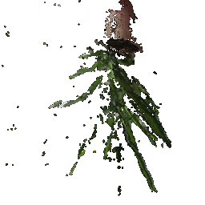
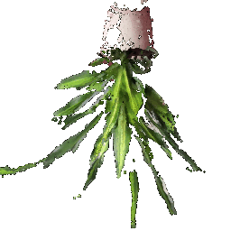
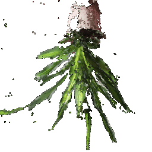
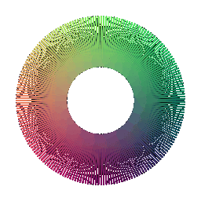
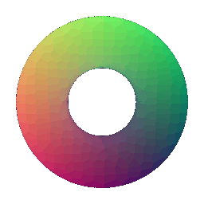

**Part 1: Rendering Basics with Pytorch3D**
Previous |
Home |
Next
**Goals:** Learning the basics of rendering with PyTorch3D, explore 3D representations, and practice constructing simple geometry.
# Practicing with Cameras
## 360-degree Renders

## Re-creating the Dolly Zoom
The [Dolly Zoom](https://en.wikipedia.org/wiki/Dolly_zoom) is a famous camera effect,
first used in the Alfred Hitchcock film
[Vertigo](https://www.youtube.com/watch?v=G7YJkBcRWB8).
The core idea is to change the focal length of the camera while moving the camera in a
way such that the subject is the same size in the frame, producing a rather unsettling
effect.

# Practicing with Meshes
## Constructing a Tetrahedron

## Constructing a Cube

# Re-texturing a mesh
![**Retextured cow mesh with color1=[1, 1, 0] and color2=[0, 1, 1]**](images/cow_retextured.gif)
# Camera Transformations
Default | 90 degrees rotation about z-axis | Translation about z-axis | Translation about x-axis and y-axis | 90 degrees rotation about y-axis
:---:|:---:|:---:|:---:|:---:
 ||||
# Rendering Generic 3D Representations
## Rendering Point Clouds from RGB-D Images
Point Cloud 1 | Point Cloud 2 | Combined Point Cloud
:---:|:---:|:---:
 | | 
**In your submission, include a gif of each of these point clouds side-by-side.**
## Parametric Functions
A parametric function generates a 3D point for each point in the source domain.
For example, given an elevation `theta` and azimuth `phi`, we can parameterize the
surface of a unit sphere as
`(sin(theta) * cos(phi), cos(theta), sin(theta) * sin(phi))`. By sampling values of `theta` and `phi`, we can generate a sphere point cloud.
Torus 200 | Torus 500
:---:|:---:
| 
## Implicit Surfaces
In this part, we will explore representing geometry as a function in the form of an implicit function.
In general, given a function F(x, y, z), we can define the surface to be the zero level-set of F i.e.
(x,y,z) such that F(x, y, z) = 0. The function F can be a mathematical equation or even a neural
network.
To visualize such a representation, we can discretize the 3D space and evaluate the
implicit function, storing the values in a voxel grid.
Finally, to recover the mesh, we can run the
[marching cubes](https://en.wikipedia.org/wiki/Marching_cubes) algorithm to extract
the 0-level set.

Mesh rendering is more visually appleaing due to its smooth and curved surface, as well as the ability to apply texture and lighting effects.
Rendering a mesh is relatively computationally expensive and requires alot of memory to store.
Meshes are also more complex to work with and require more processing power to manipulate.
Point cloud rendering is relatively faster and requires less memory as it only stores the positions in 3D space.
However, point clouds are visually less appealing due to lack of smooth surfaces and detail, and lighting and texture effects cannot be applied.
# Do Something Fun: Flying Donut!

# Sampling Points on Meshes
We will explore how to obtain point clouds from triangle meshes.
One obvious way to do this is to simply discard the face information and treat the vertices as a point cloud.
However, this might be unresonable if the faces are not of equal size.
A solution to this problem is to use a uniform sampling of the surface using stratified sampling. The procedure is as follows:
1. Sample a face with probability proportional to the area of the face
2. Sample a random [barycentric coordinate](https://en.wikipedia.org/wiki/Barycentric_coordinate_system) uniformly
3. Compute the corresponding point using baricentric coordinates on the selected face.
Mesh | Point Cloud 100 | Point Cloud 500 | Point Cloud 1000 | Point Cloud 10000
:---:|:---:|:---:|:---:|:---:
 ||||
 ||||
Previous |
Home |
Next